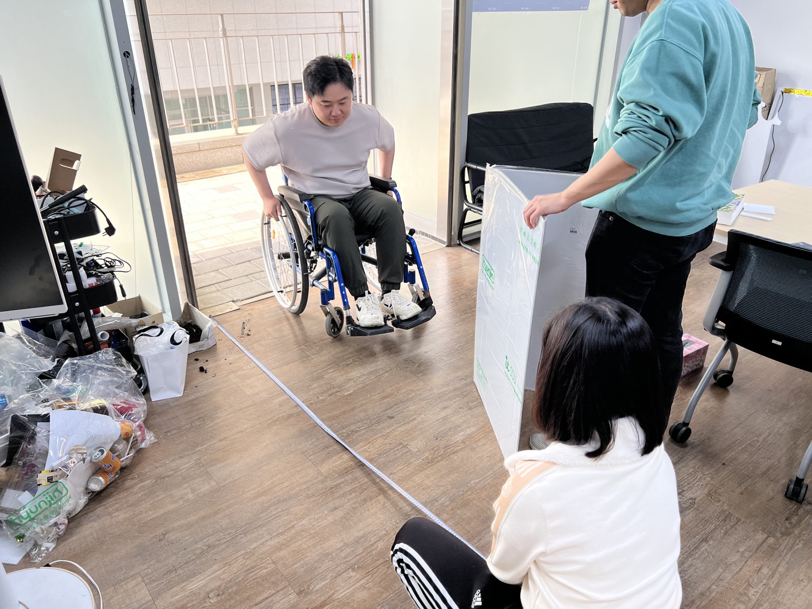
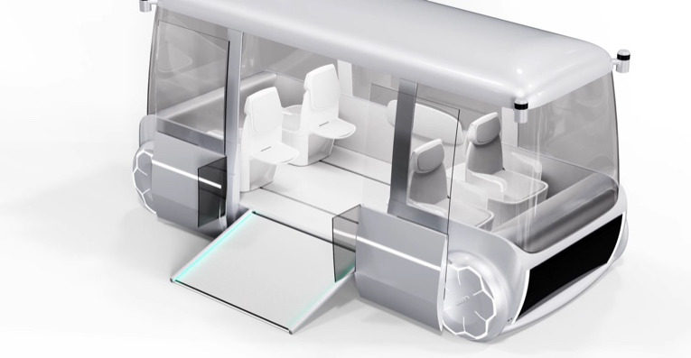

2023UX Research · Hyundai
Inclusive Mobility
시각·청각 장애인부터 노약자, 어린이까지 누구나 안전하게 타고 내릴 수 있는 PBV의 UX 요소와 편의장치를 설계하고, 3D 프린팅과 1:1 폼보드 목업으로 검증했습니다.

Boarding
Door & Door Step
이중 개폐 도어로 출입구를 넓게 열고, 도어스텝이 계단 또는 경사판으로 내려와 휠체어 이용자도 바로 탈 수 있게 했습니다. 보조도어의 투명 디스플레이로 승하차 방향을 안내하고, 탑승 가능 여부를 빛으로 알립니다.
도어와 도어스텝은 1:1 목업으로 만들어 휠체어로 직접 진입하며 폭과 경사를 확인했습니다.


Interior
실내에서는 일어서고 앉는 동작, 휠체어 고정, 좌석 배치를 다뤘습니다.
01
Assist Seat
팔걸이를 짚고 일어나면 시트가 따라 올라와 일어서는 동작을 돕습니다.
02
Wheelchair Lock
바퀴가 버튼을 누르면 고리가 나와 휠체어를 고정합니다.
03
Seat Layout
휠체어 탑승 공간을 고려해 좌석 배치를 구성했습니다.


More
바닥·외부 커뮤니케이션 요소도 함께 제안하고 일부는 실물로 만들어 확인했습니다.





Role
선행 연구UX 아이템 발굴프로토타입 제작UX 리서치 및 검증